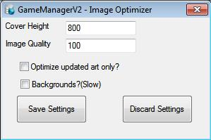

Window Interface
When DatabaseManager updates games it also optimizes the artwork, this window sets the optimizer settings for DatabaseManager. You can access this window by clicking File -> Optimizer Settings.
Window Interface

Cover
Height – The height of the Box Art after optimization
(Recommended setting: 800px)
Image Quality – A value
between 1 and 99, where 99 is best quality and 1 is worst
(Recommended setting: 75)
Optimize updated art only?
– Optimize art only when its been updated (Recommended setting:
Not Ticked)
Backgrounds?(Slow) – If you are having
problems with some Fan Art being downloaded but failing to show up on
FrontEnd then tick this and it should solve the problem. If your not
having problems you don't really need to tick this as it slows the
program down. (Recommended setting: Not Ticked)